<!DOCTYPE html>
<html lang="" xml:lang="">
<head>

  <meta charset="utf-8" />
  <meta http-equiv="X-UA-Compatible" content="IE=edge" />
  <title>3 Numerical Studies | A Numerical Study of an Interacting Particle System</title>
  <meta name="description" content="3 Numerical Studies | A Numerical Study of an Interacting Particle System" />
  <meta name="generator" content="bookdown 0.19 and GitBook 2.6.7" />

  <meta property="og:title" content="3 Numerical Studies | A Numerical Study of an Interacting Particle System" />
  <meta property="og:type" content="book" />
  
  
  
  

  <meta name="twitter:card" content="summary" />
  <meta name="twitter:title" content="3 Numerical Studies | A Numerical Study of an Interacting Particle System" />
  
  
  

<meta name="author" content="Tom Hodgson – Supervised by Michela Ottobre &amp; Kevin Painter" />


<meta name="date" content="2020-05-26" />

  <meta name="viewport" content="width=device-width, initial-scale=1" />
  <meta name="apple-mobile-web-app-capable" content="yes" />
  <meta name="apple-mobile-web-app-status-bar-style" content="black" />
  
  
<link rel="prev" href="litreview.html"/>
<link rel="next" href="future.html"/>
<script src="libs/jquery-2.2.3/jquery.min.js"></script>
<link href="libs/gitbook-2.6.7/css/style.css" rel="stylesheet" />
<link href="libs/gitbook-2.6.7/css/plugin-table.css" rel="stylesheet" />
<link href="libs/gitbook-2.6.7/css/plugin-bookdown.css" rel="stylesheet" />
<link href="libs/gitbook-2.6.7/css/plugin-highlight.css" rel="stylesheet" />
<link href="libs/gitbook-2.6.7/css/plugin-search.css" rel="stylesheet" />
<link href="libs/gitbook-2.6.7/css/plugin-fontsettings.css" rel="stylesheet" />
<link href="libs/gitbook-2.6.7/css/plugin-clipboard.css" rel="stylesheet" />


</head>

<body>


  <div class="book without-animation with-summary font-size-2 font-family-1" data-basepath=".">

    <div class="book-summary">
      <nav role="navigation">

<ul class="summary">
<li class="chapter" data-level="" data-path="index.html"><a href="index.html"><i class="fa fa-check"></i>Preface</a></li>
<li class="chapter" data-level="1" data-path="intro.html"><a href="intro.html"><i class="fa fa-check"></i><b>1</b> Introduction</a></li>
<li class="chapter" data-level="2" data-path="litreview.html"><a href="litreview.html"><i class="fa fa-check"></i><b>2</b> The Model</a></li>
<li class="chapter" data-level="3" data-path="num-studies.html"><a href="num-studies.html"><i class="fa fa-check"></i><b>3</b> Numerical Studies</a><ul>
<li class="chapter" data-level="3.1" data-path="num-studies.html"><a href="num-studies.html#on-the-difference-between-local-and-global-scaling"><i class="fa fa-check"></i><b>3.1</b> On the Difference Between Local and Global Scaling</a></li>
<li class="chapter" data-level="3.2" data-path="num-studies.html"><a href="num-studies.html#simulation-of-kinetic-models"><i class="fa fa-check"></i><b>3.2</b> Simulation of Kinetic Models</a></li>
</ul></li>
<li class="chapter" data-level="4" data-path="future.html"><a href="future.html"><i class="fa fa-check"></i><b>4</b> Future Work</a><ul>
<li class="chapter" data-level="4.1" data-path="future.html"><a href="future.html#other-related-literature"><i class="fa fa-check"></i><b>4.1</b> Other Related Literature</a></li>
</ul></li>
<li class="appendix"><span><b>Appendix</b></span></li>
<li class="chapter" data-level="A" data-path="app-prodmeasure.html"><a href="app-prodmeasure.html"><i class="fa fa-check"></i><b>A</b> Product Measure is a Solution to Kinetic PDE</a><ul>
<li class="chapter" data-level="A.1" data-path="app-prodmeasure.html"><a href="app-prodmeasure.html#product-distribution-is-a-solution"><i class="fa fa-check"></i><b>A.1</b> Product Distribution is a Solution</a></li>
<li class="chapter" data-level="A.2" data-path="app-prodmeasure.html"><a href="app-prodmeasure.html#convergence-depends-on-initial-average-velocity"><i class="fa fa-check"></i><b>A.2</b> Convergence Depends on Initial Average Velocity</a></li>
</ul></li>
<li class="chapter" data-level="B" data-path="app-PSmeanZero.html"><a href="app-PSmeanZero.html"><i class="fa fa-check"></i><b>B</b> Particle System has an Invariant Measure with Mean Zero</a></li>
<li class="chapter" data-level="C" data-path="app-ergavg.html"><a href="app-ergavg.html"><i class="fa fa-check"></i><b>C</b> Forms of Convergence</a><ul>
<li class="chapter" data-level="" data-path="app-ergavg.html"><a href="app-ergavg.html#convergence-in-law"><i class="fa fa-check"></i>Convergence in Law</a></li>
<li class="chapter" data-level="" data-path="app-ergavg.html"><a href="app-ergavg.html#convergence-of-ergodic-averages"><i class="fa fa-check"></i>Convergence of Ergodic Averages</a></li>
</ul></li>
<li class="chapter" data-level="D" data-path="app-implementation.html"><a href="app-implementation.html"><i class="fa fa-check"></i><b>D</b> Implementation of the Particle System</a><ul>
<li class="chapter" data-level="" data-path="app-implementation.html"><a href="app-implementation.html#v0.1"><i class="fa fa-check"></i>v0.1</a></li>
<li class="chapter" data-level="" data-path="app-implementation.html"><a href="app-implementation.html#v0.2"><i class="fa fa-check"></i>v0.2</a></li>
<li class="chapter" data-level="" data-path="app-implementation.html"><a href="app-implementation.html#v0.3"><i class="fa fa-check"></i>v0.3</a></li>
</ul></li>
</ul>

      </nav>
    </div>

    <div class="book-body">
      <div class="body-inner">
        <div class="book-header" role="navigation">
          <h1>
            <i class="fa fa-circle-o-notch fa-spin"></i><a href="./">A Numerical Study of an Interacting Particle System</a>
          </h1>
        </div>

        <div class="page-wrapper" tabindex="-1" role="main">
          <div class="page-inner">

            <section class="normal" id="section-">
<div id="num-studies" class="section level1">
<h1><span class="header-section-number">3</span> Numerical Studies</h1>
Models of particle systems contain complex dynamics and static plots often do not best illustrate their behaviour. For this reason, animations of the systems have also been produced to accompany this report. They are available at
<center>
<a href="https://tom271.github.io/InteractingParticleSystems/" class="uri">https://tom271.github.io/InteractingParticleSystems/</a>
</center>
<p>This is a precursor to a webpage that will accompany a future work in which we hope to produce interactive simulations of the system through a Dash app<a href="#fn1" class="footnote-ref" id="fnref1"><sup>1</sup></a>. Where animations are available, they will be clearly signposted in figure captions. For more details on the implementation, see Appendix <a href="app-implementation.html#app-implementation">D</a>. We begin this section by confirming known results numerically, before starting to answer some of the questions raised in the previous section.</p>
<p>To demonstrate some possible behaviours of the locally scaled particle system <a href="litreview.html#eq:particlemodelx">(2.1)</a>-<a href="litreview.html#eq:particlemodelv">(2.2)</a>, we simulate it using a smooth herding function(<span class="math inline">\(G_1\)</span>) with <span class="math inline">\(\varphi\equiv1\)</span> and <span class="math inline">\(\sigma=1\)</span> for 1000s. The aim is to corroborate the analytic results for this system. Figure <a href="num-studies.html#fig:alwaysconverge">3.1</a> shows a histogram of the particles’ positions at <span class="math inline">\(t=0\)</span> and <span class="math inline">\(t=1000\)</span>. We see that they appear to converge to either <span class="math inline">\(\mu_+\)</span> or <span class="math inline">\(\mu_-\)</span>, the known stationary measures of the <a href="litreview.html#eq:nl">(2.5)</a>, depending on the sign of the average velocity of the initial data. This is in agreement with the results of the previous section (and Appendix <a href="app-prodmeasure.html#app-prodmeasure">A</a>). However, if the simulation is ran for longer, we see that these are only metastable states and instead the average velocity of the particles switches between <span class="math inline">\(+1\)</span> and <span class="math inline">\(-1\)</span>. A similar effect can be produced by increasing the noise or reducing the number of particles. Assuming uniform interaction, we have proved that the stationary measure of the particle system has mean zero. This is numerical corroboration of that fact. This switching of stability is a well-known phenomenon and indeed is behind the strength of many optimisation algorithms such as SGLD <span class="citation">[<a href="#ref-Nagapetyan17" role="doc-biblioref">10</a>]</span>. Figure  better illustrates this switching by reducing the number of simulated particles. By removing the noise present in <a href="litreview.html#eq:particlemodelx">(2.1)</a>-<a href="litreview.html#eq:particlemodelv">(2.2)</a>, we can remove this effect. If we assume space homogeneity, set <span class="math inline">\(\varphi \equiv 1\)</span> and remove the noise the system (<span class="math inline">\(\sigma=0\)</span>) reduces to
<span class="math display" id="eq:homPS">\[\begin{align}
\mathrm{d} {v}_t^{i,N} &amp; = - v_t^{i,N} \mathrm{d} t + G\left(M(t)\right) \mathrm{d} t ,
\tag{3.1}
\end{align}\]</span>
where
<span class="math display">\[
M(t) = \frac{1}{N}\sum_{j=1}^N v^{j,N}_t
\]</span>
Summing over <span class="math inline">\(i\)</span> and dividing by <span class="math inline">\(N\)</span> both sides of <a href="num-studies.html#eq:homPS">(3.1)</a> one obtains a closed equation for the mean velocity, that is
<span class="math display">\[\mathrm{d}M(t) = \left(G(M(t)) - M(t)\right)\mathrm{d}t.  \]</span>
This is in accord with the result for the space homogeneous PDE <a href="litreview.html#eq:lin">(2.7)</a> when <span class="math inline">\(\varphi\equiv1\)</span> and has stationary points where <span class="math inline">\(M(t) = G(M(t))\)</span>. For our examples, this corresponds to <span class="math inline">\(M(t) =-1, 0 ,+1\)</span>.</p>
<div class="figure" style="text-align: center"><span id="fig:alwaysconverge"></span>

<p class="caption">
Figure 3.1: Regardless of the initial data, the system always converges to <span class="math inline">\(\mu_+\)</span> or <span class="math inline">\(\mu_-\)</span> when <span class="math inline">\(\varphi\equiv1\)</span>. Here, initial configurations with positive initial average velocity are coloured green and those with negative initial velocity are orange. Here we simulate <span class="math inline">\(1000\)</span> particles under a uniform interaction with a smooth herding function and <span class="math inline">\(\sigma=1\)</span>. After <span class="math inline">\(1000s\)</span> a histogram is used as an approximation for the empirical measure and plotted. The initial data are randomly selected Gaussians with means varying between <span class="math inline">\(-5\)</span> and <span class="math inline">\(5\)</span> while the standard deviations lie between <span class="math inline">\(0.5\)</span> and <span class="math inline">\(3\)</span>. Here a smooth herding function <span class="math inline">\(G_1\)</span> was used, and a timestep of <span class="math inline">\(\Delta t =0.01\)</span> in an Euler-Maruyama scheme (see Appendix <a href="app-implementation.html#app-implementation">D</a>)
</p>
</div>
<div class="figure" style="text-align: center"><span id="fig:switch"></span>
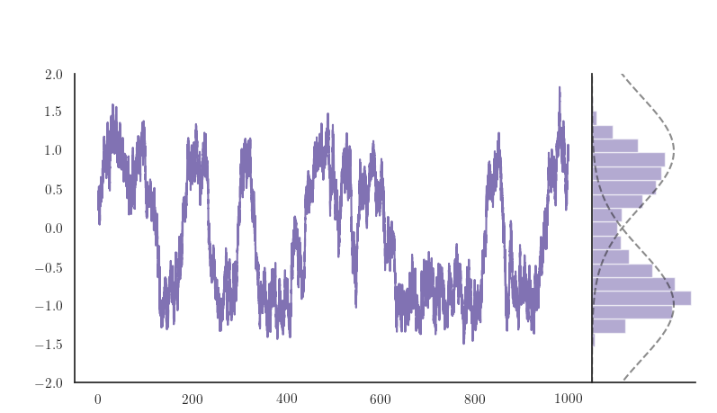
<p class="caption">
Figure 3.2: Evolving the dynamics for a longer time suggests an invariant measure with mean <span class="math inline">\(0\)</span> due to the possibility of jumping between states. Here <span class="math inline">\(N=50 , \sigma=1\)</span> and a smooth herding function is used. The grey dashed lines show Gaussian distributions centred at <span class="math inline">\(\pm1\)</span> for reference.
</p>
</div>
<p>In the absence of noise, we can time the convergence to equilibrium for different initial data as we know that no switching is possible. Once a baseline has been set for uniform interaction, we can compare this with non-uniform interactions, <span class="math inline">\(\varphi\not\equiv1\)</span>. To do this we use the following initial setup. We start the particles in two diametrically opposite clusters of equal width: one containing one third of the total particles with positive velocity, and the other containing two thirds of the particles with negative velocity. This allows for an interesting setup—most particles begin movement with negative velocity yet the average velocity can be positive. We give each particle in the small cluster velocity <span class="math inline">\(1.8\)</span>, while in the larger cluster all particles have velocity <span class="math inline">\(-0.2\)</span>. The initial average velocity of the system is thus <span class="math inline">\(\frac{7}{15}\approx 0.467\)</span>.
<span class="math display">\[\begin{align*}
x^{i,3N}_0 &amp;\sim U\left[\pi-\frac{\pi}{10},\pi+\frac{\pi}{10}\right],  
&amp;&amp;v^{i,3N}_0 = -0.2 
\qquad \text{ for } 1\leq i\leq 2N,\\
x^{i,3N}_0 &amp;\sim U\left[-\frac{\pi}{10},\frac{\pi}{10}\right],  &amp;&amp;v^{i,3N}_0 = 1.8\qquad \text{ for } 2N+1\leq i\leq 3N.
\end{align*}\]</span>
With this initial distribution, the system is very far from the stationary distribution of the PDE. To control the influence of the interaction function, we use the hard cutoff indicator function described in Figure . By varying the value of <span class="math inline">\(\gamma\)</span>, the range of interaction can be controlled. Note that this interaction is not uniformly bounded above zero, and as such does not satisfy the assumptions <a href="litreview.html#eq:intassump">(2.3)</a>. For the herding function we use the step function common in the modelling literature.
<span class="math display">\[\begin{align*}
     \varphi(x) &amp;= \mathbb{I}_{[-\pi\gamma,\pi\gamma]}(x)\,,\gamma\in \bigg\lbrack-\frac{1}{2},\frac{1}{2}\bigg\rbrack,\\  
     G(u) &amp;= \frac{u+\beta \mathrm{sgn}(u)}{1+\beta}\, ,  \beta&gt;0
\end{align*}\]</span>
As a guide, doubling the radius of interaction <span class="math inline">\(\gamma\)</span>, gives the fraction of the torus which can be seen by each particle, and <span class="math inline">\(\gamma= \frac{1}{2}\)</span> is equivalent to <span class="math inline">\(\varphi\equiv1\)</span>.</p>
<p>Figure  shows how this affects the speed of convergence. Here the number of particles <span class="math inline">\(N\)</span> has no discernible effect on the dynamics. Surprisingly, we see here that the average velocity can settle into a periodic orbit not centred at <span class="math inline">\(-1,0\)</span> or <span class="math inline">\(1\)</span>, as we might na"ively expect. The system does not converge to <span class="math inline">\(\pm1\)</span> either in law or in the sense of ergodic averages—for an explanation of the difference, see Appendix <a href="app-ergavg.html#app-ergavg">C</a>. This cannot occur in the noisy particle system and indeed is unexpected. However to see how this can occur, consider a system containing just three particles. There are three possible behaviours From the two particles case, we know the particles will either not interact and come to rest or they can coalesce and move in unison. Both of these are possible in a three particle system however a third option appears. Two of the particles can coalesce and quickly converge to velocity <span class="math inline">\(\pm1\)</span>. When this occurs, decay to rest is no longer possible. Upon meeting the third particle, it can either be absorbed into the cluster or the interaction can be insufficient and it gets left behind. The cluster containing only two particles will then accelerate back to its preferred velocity while the third particle returns to rest—until the cluster comes back around. This is what produces these at first counterintuitive periodic patterns. The same is happening here for very weak interactions. See online for the three particle case and the one present in Figure <a href="num-studies.html#fig:interaction">3.3</a>.</p>
<div class="figure" style="text-align: center"><span id="fig:interaction"></span>

<p class="caption">
Figure 3.3: In the deterministic system (<span class="math inline">\(\sigma=0\)</span>), unexpected behaviours can occur. For <span class="math inline">\(\gamma=0.05\)</span>, we see the average velocity settle into a periodic orbit, and for <span class="math inline">\(\gamma=0.1\)</span>, a convergence to <span class="math inline">\(-1\)</span>. In a), we see the time taken for the average velocity to converge. Although skewed by the periodic trajectory, it is possible to see the dependence on <span class="math inline">\(\gamma\)</span>. In b), the colour refers to the size of <span class="math inline">\(\gamma\)</span>. In all these simulations, we use a step herding function and the opposing clusters initial setup.
</p>
</div>
<p>Also surprising here is that the initial average velocity of the ensemble, <span class="math inline">\(M(0)\)</span>, does not govern the convergence as it did for both the PDE and the particle system when <span class="math inline">\(\varphi \equiv 1\)</span>. We see that there is a radius <span class="math inline">\(\gamma = 0.05\)</span> for which the system converges to velocity <span class="math inline">\(-1\)</span>—at odds with its initial average velocity, <span class="math inline">\(M(0)=\frac{7}{15}\)</span>. This occurs as the two initial clusters do not interact quick enough. An intuitive reasoning for this is that, seen separately, each cluster is converging to a different value. The cluster at <span class="math inline">\(0\)</span> has positive velocity and thus accelerates towards average velocity <span class="math inline">\(1\)</span>, while the cluster at <span class="math inline">\(\pi\)</span> has negative velocity and accelerates towards <span class="math inline">\(-1\)</span>. This can cause the average velocity of the entire ensemble to become negative before sufficient interaction occurs. Thus by the time the interactions begin, the system as whole will converge to <span class="math inline">\(-1\)</span>. We see this happening whenever <span class="math inline">\(\gamma \leq 0.1\)</span>.</p>
<p>Now that the role of the interaction function is better understood, we take a similar approach in our study of the herding function <span class="math inline">\(G\)</span>. In particular, we are interested in how the presence of a discontinuity affects the dynamics. As such, we take the smoothed herding function
<span class="math display">\[
    G_{\alpha}(u) = \frac{\mathrm{atan}(\alpha u)}{\mathrm{atan}(\alpha)}\, , \alpha &gt; 0 .
\]</span>
The parameter <span class="math inline">\(\alpha\)</span> allows us to control the gradient of the herding function. As $, G(u) $ tends towards a step function. Figure <a href="num-studies.html#fig:steepherding">3.4</a> shows the effect of three different values: <span class="math inline">\(\alpha = 1, 5,10\)</span>. It can be seen that as the herding function gets steeper, periodic orbits become more prevalent. The system behaves unlike we expect from any of the analytic results.</p>
<div class="figure" style="text-align: center"><span id="fig:steepherding"></span>
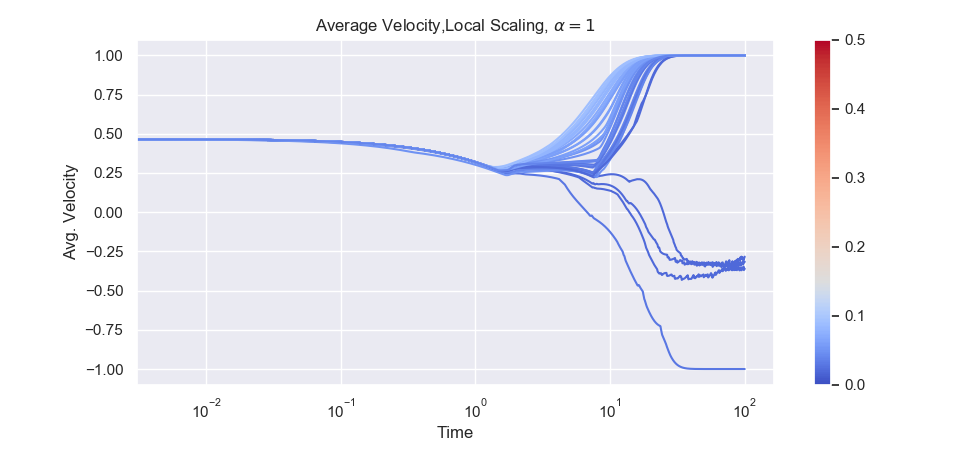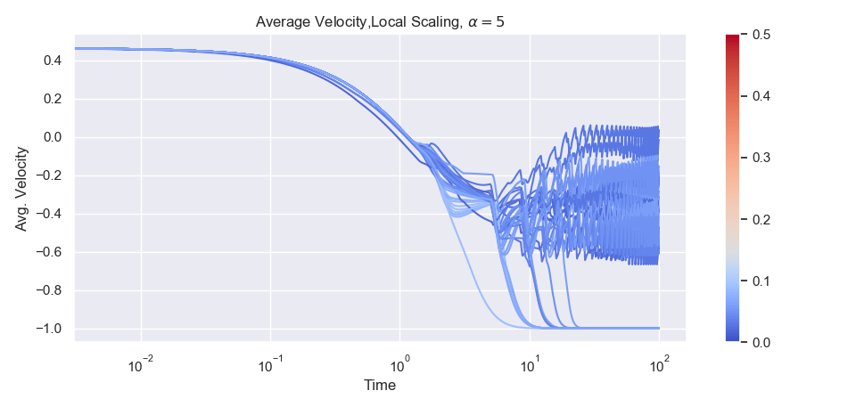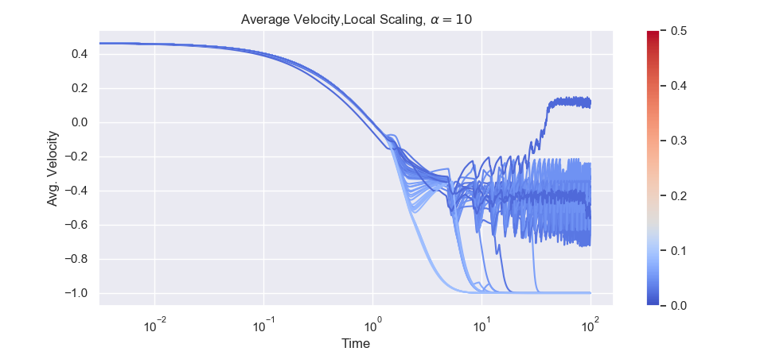
<p class="caption">
Figure 3.4: As the steepness of the herding function increases, we see more and more erratic behaviour for small <span class="math inline">\(\gamma\)</span>. Here the herding function is smooth, <span class="math inline">\(G_{\alpha}\)</span> with <span class="math inline">\(\alpha=1,5,10\)</span>. The interaction function has a hard cutoff.
</p>
</div>
<p>To aid in the stochastic case, it will be pertinent to examine the existence of spatially inhomogeneous distributions in the deterministic case. Starting with the two clusters of uneven density described above, we evolve the dynamics for <span class="math inline">\(50s\)</span> seconds before counting the number of clusters that remain. We do this by looking at the histogram at the final time. The ``eyeball metric’’ was chosen after considering other methods such as <span class="math inline">\(k\)</span>-means, Jenks optimisation or counting the minima of a kernel density estimate for its ease of adaptation to the torus. Table <a href="num-studies.html#tab:clusters">3.1</a> below shows the number of clusters present after <span class="math inline">\(50s\)</span>. We see that as <span class="math inline">\(\gamma\)</span> increases, the number of clusters present decreases. Note that despite the clusters, this system is still converging to a uniform distribution in the sense of ergodic averages.</p>
<table>
<caption><span id="tab:clusters">Table 3.1: </span></caption>
<thead>
<tr class="header">
<th align="right"></th>
<th align="right">N=24</th>
<th align="right">N=168</th>
<th align="right">N=360</th>
<th align="right">N=456</th>
</tr>
</thead>
<tbody>
<tr class="odd">
<td align="right"><span class="math inline">\(\gamma=0.05\)</span></td>
<td align="right">3</td>
<td align="right">2</td>
<td align="right">3</td>
<td align="right">2</td>
</tr>
<tr class="even">
<td align="right"><span class="math inline">\(\gamma=0.15\)</span></td>
<td align="right">2</td>
<td align="right">2</td>
<td align="right">2</td>
<td align="right">1</td>
</tr>
<tr class="odd">
<td align="right"><span class="math inline">\(\gamma=0.3\)</span></td>
<td align="right">1</td>
<td align="right">1</td>
<td align="right">1</td>
<td align="right">1</td>
</tr>
<tr class="even">
<td align="right"><span class="math inline">\(\gamma=0.45\)</span></td>
<td align="right">1</td>
<td align="right">1</td>
<td align="right">1</td>
<td align="right">1</td>
</tr>
</tbody>
</table>
<p>In the deterministic setting, we have seen that a larger interaction radius speeds up convergence and if the radius is too small it is possible to converge to a different value than that expected. We also see that stable clusters form—as expected for a deterministic system. Surprisingly, we saw periodic average velocities emerge in many cases when the interaction radius was small. The herding function also affects convergence, with the presence of a steep gradient also causing periodic average velocities. Now, we turn our attention back to the stochastic system to see whether these phenomena persist in the presence of noise. We immediately expect to lose these periodic average velocities, as well as any clusters present.</p>
<p>To see the influence of noise, Figure <a href="num-studies.html#fig:stoch-interaction">3.5</a> shows the effect on average velocity when <span class="math inline">\(\sigma=0.1\)</span>. Again we begin the evolution from two diametrically opposed clusters initially travelling with deterministic speeds <span class="math inline">\(-0.2\)</span> and <span class="math inline">\(1.8\)</span>. It can be seen that no periodic orbits persist and all systems converge to <span class="math inline">\(\pm1\)</span> except when <span class="math inline">\(\gamma=0\)</span>. Furthermore, smaller values of <span class="math inline">\(\gamma\)</span> cause convergence to slow down, similar to the deterministic case. The difference here is clearer as there are no periodic orbits skewing the dataset.</p>
<div class="figure" style="text-align: center"><span id="fig:stoch-interaction"></span>

<p class="caption">
Figure 3.5: One realisation of the locally scaled particle model with the step herding function; hard cutoff interaction function with <span class="math inline">\(\gamma = 0, 0.05,0.1,\dots,0.5\)</span> and <span class="math inline">\(N=24, 72, 120, \dots, 408\)</span>. The initial distribution is two opposing clusters travelling in opposite directions. This is the same setup as Figure <a href="num-studies.html#fig:interaction">3.3</a> but with <span class="math inline">\(\sigma=0.01\)</span>. We see that there no periodic orbits persist, unlike the deterministic case. The colour of the lines corresponds to the interaction radius <span class="math inline">\(\gamma\)</span>.
</p>
</div>
<p>To see if the volatile behaviour produced by increasing the gradient of <span class="math inline">\(G\)</span> persists in the presence of noise, we now repeat the earlier experiment but here with <span class="math inline">\(\sigma=0.01\)</span>. Figure <a href="num-studies.html#fig:steepherdingnoisy">3.6</a> shows the result: when there is noise in the system, its effect is much reduced. Note however that for <span class="math inline">\(\gamma = 0.1\)</span>, the system still settles into an unexpected state before the noise pushes the average velocity towards <span class="math inline">\(-1\)</span>.</p>
<div class="figure" style="text-align: center"><span id="fig:steepherdingnoisy"></span>
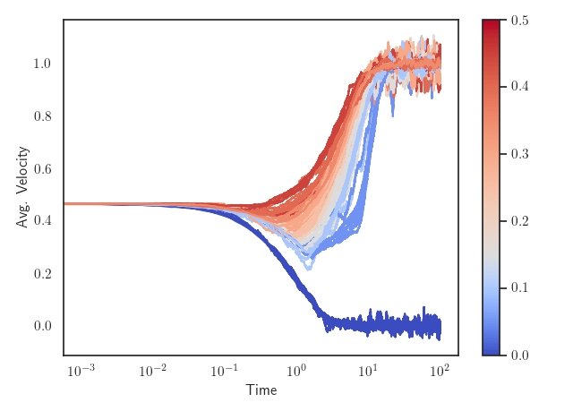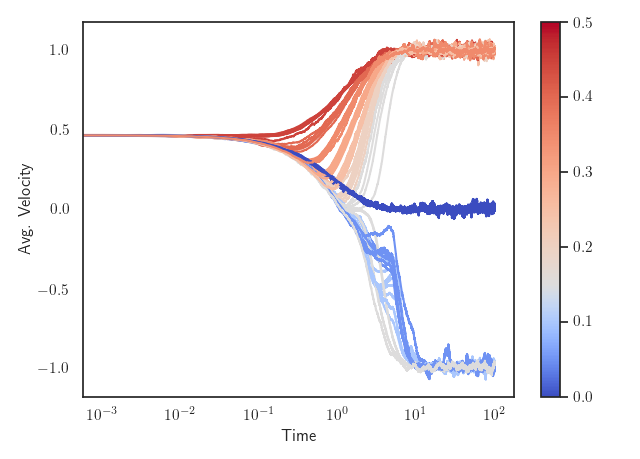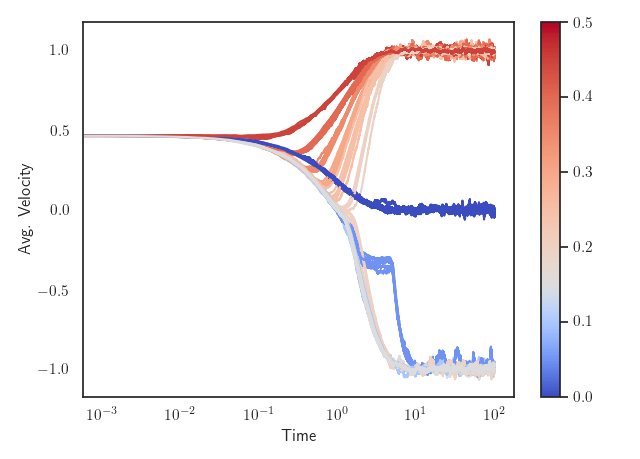
<p class="caption">
Figure 3.6: As in Figure <a href="num-studies.html#fig:steepherding">3.4</a>, here the herding function is smooth, <span class="math inline">\(G_{lpha}\)</span> with <span class="math inline">\(lpha=1,5,10\)</span> however here we introduce some noise, <span class="math inline">\(\sigma=0.01\)</span>. The interaction function has a hard cutoff across a range of <span class="math inline">\(\gamma\)</span>. Here we see that the noise removes the erratic periodic behaviours regardless of gradient. However note that there is an effect for some <span class="math inline">\(\gamma\)</span>, particularly when <span class="math inline">\(\alpha=10\)</span>.
</p>
</div>
<p>When there is noise in the system, we can compare the rate at which clusters break to the deterministic system where it is possible for clusters to persist. To do this, we calculate the discrete <span class="math inline">\(\ell^1\)</span> distance between the uniform distribution and a histogram of all particle positions at time <span class="math inline">\(t\)</span>. This will give a quantitative measure of how quickly clusters disperse in the stochastic regime. Figure  shows the difference in <span class="math inline">\(\ell^1\)</span> distance for a <span class="math inline">\(N=87\)</span> and $= 0.02,0.04,0.09 $. It can be seen that regardless of <span class="math inline">\(\gamma\)</span>, the noise in the velocity variable quickly breaks any clusters present. Note that the <span class="math inline">\(\ell^1\)</span> distance does not converge to 0 as expected as there is not enough particles in the system for the histogram to ever be a good approximation to the uniform distribution at any given time point. These results suggest that spatially inhomogeneous invariant distributions do not exist for the particle system even when <span class="math inline">\(\varphi\not \equiv 1\)</span>.</p>
<div class="figure" style="text-align: center"><span id="fig:clusterdispersal"></span>
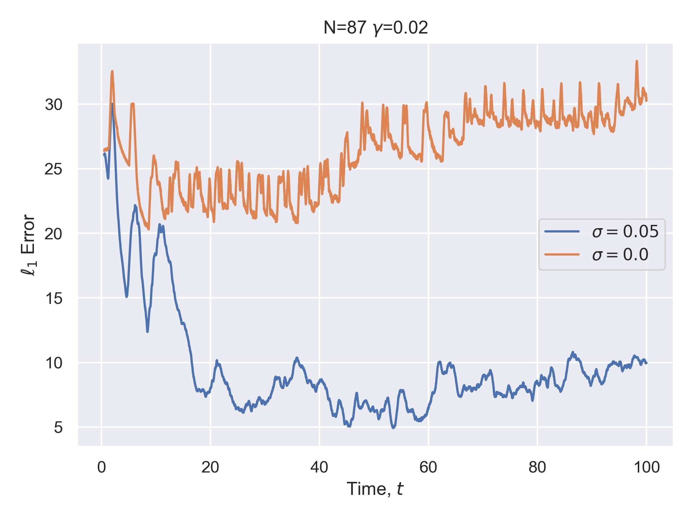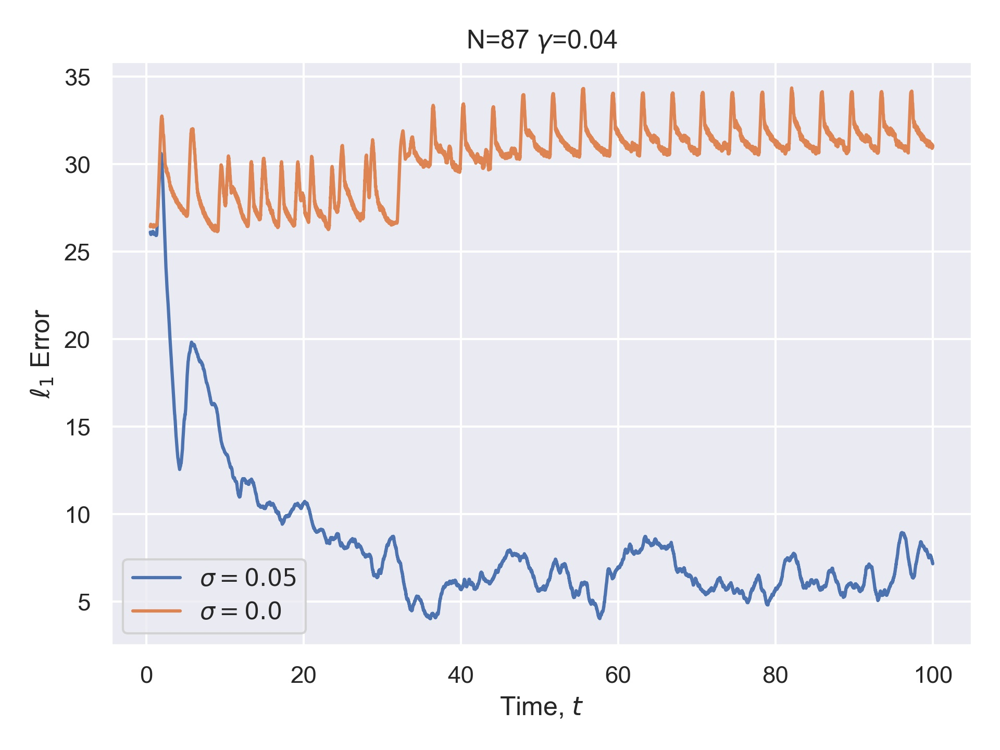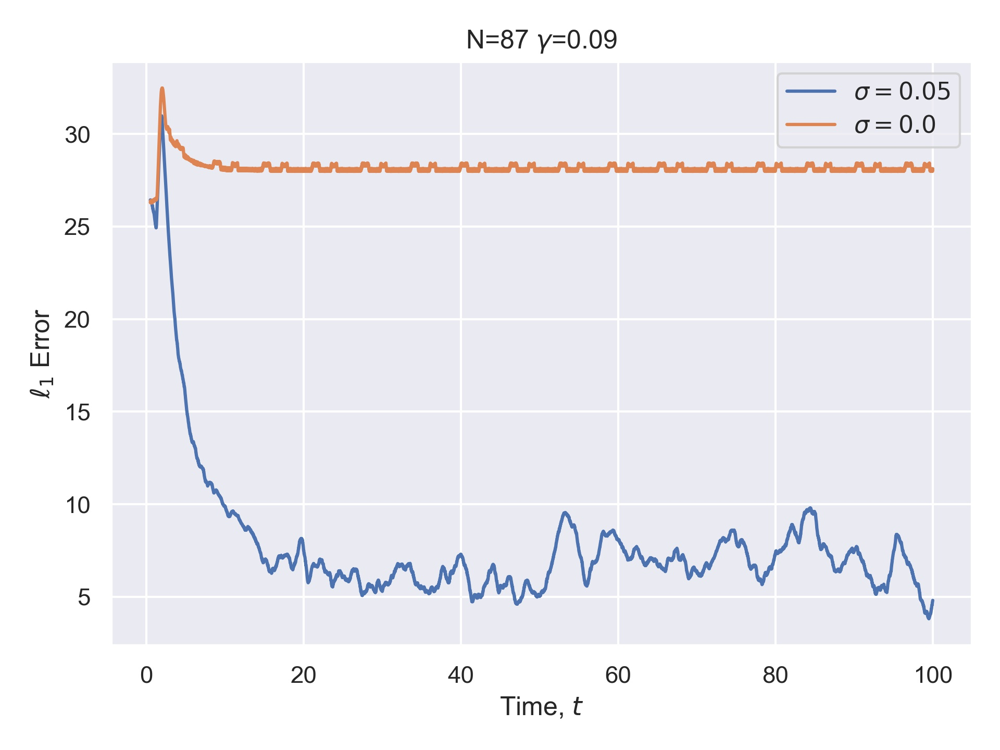
<p class="caption">
Figure 3.7: A comparison of <span class="math inline">\(\ell^1\)</span> distance between a histogram of particle positions and the uniform distribution. The deterministic system (orange) retains clusters and therefore a high distance, while even a small amount of noise (here, <span class="math inline">\(\sigma=0.05\)</span>) disperses the particle positions.
</p>
</div>
<div id="on-the-difference-between-local-and-global-scaling" class="section level2">
<h2><span class="header-section-number">3.1</span> On the Difference Between Local and Global Scaling</h2>
<p>If the system is scaled globally, as in <a href="litreview.html#eq:Garnierparticlemodelx">(2.12)</a>-<a href="litreview.html#eq:Garnierparticlemodelv">(2.13)</a>, we see a difference in speed of convergence. Figure <a href="num-studies.html#fig:globalavgvel">3.8</a> shows that for smaller values of <span class="math inline">\(\gamma\)</span>, the system has a much larger convergence time. The systems appear to settle into a steady state dependent on the value of <span class="math inline">\(\gamma\)</span>, before moving out of this state and towards <span class="math inline">\(-1\)</span>. Many trajectories settle into a periodic pattern very close to <span class="math inline">\(-1\)</span>—these are caused by one or two particles remaining out of a large cluster as discussed in the deterministic case.As <span class="math inline">\(\gamma\)</span> gets larger, the local scaling converges to the global scaling and we see less difference in the trajectories (cf. Figure <a href="num-studies.html#fig:interaction">3.3</a>. This is thought to be because for this interaction function, the interaction is always less than 1. Hence, the strength of the interaction in the local scaling will always be greater than that in the global scaling, due to the monotonicity of <span class="math inline">\(G\)</span>.</p>
<div class="figure" style="text-align: center"><span id="fig:globalavgvel"></span>
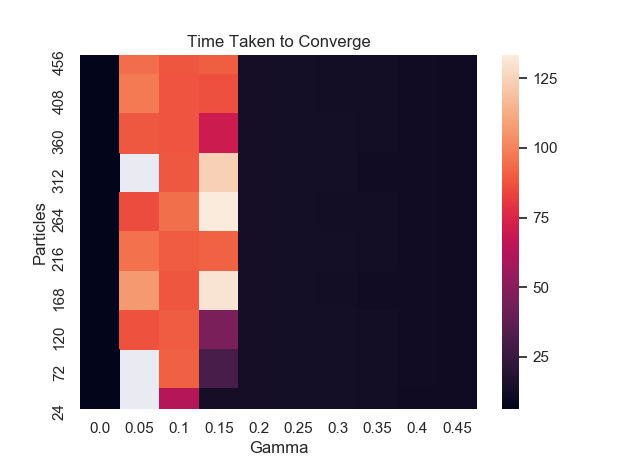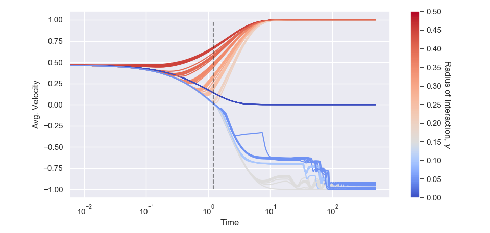
<p class="caption">
Figure 3.8: If the model is scaled globally, low values of <span class="math inline">\(\gamma\)</span> have a much larger convergence time. Here the system was evolved for <span class="math inline">\(500s\)</span> from an initial configuration of two clusters of uneven density. For higher interaction radii, behaviour is very similar. Some systems persist in a periodic trajectory for even larger times (tested up to <span class="math inline">\(1000s\)</span>). Note the logarithmic scale.
</p>
</div>
</div>
<div id="simulation-of-kinetic-models" class="section level2">
<h2><span class="header-section-number">3.2</span> Simulation of Kinetic Models</h2>
<p>Simulating the kinetic models is an ongoing work. Many standard numerical techniques seem unsuitable for this model. The PDE <a href="litreview.html#eq:nl">(2.5)</a> is degenerate, in the sense that the noise is not elliptic. By only acting on the velocity, we must be very careful not to introduce any artificial diffusion into the space variable that is a common pitfall of many standard techniques such as upwind schemes (Figure <a href="num-studies.html#fig:upwinddisp">3.9</a> illustrates this for the one-way wave equation). Doing so would surely break any clusters that may form under the dynamics. As mass is also conserved in this system (See Appendix <a href="app-prodmeasure.html#app-prodmeasure">A</a>), we also must be careful not to use any techniques that cause mass loss or allow negative solutions. To combat this, we have begun adapting <code>2DChebClass</code>, a pseudospectral method originally developed for the solution of problems arising in dynamical density functional theory (DDFT) <span class="citation">[<a href="#ref-2Dchebclass" role="doc-biblioref">11</a>, <a href="#ref-Nold17" role="doc-biblioref">12</a>]</span>. These provide exponential accuracy in the number of grid points, meaning the mesh can be much coarser than in a typical finite volume scheme. The drawback of these methods is that they are limited in the geometry of the domain in which they can solve problems. As here we are only considering a two dimensional model on <span class="math inline">\(\mathbb{T}\times\mathbb{R}\)</span>, this is not an issue.</p>
<div class="figure" style="text-align: center"><span id="fig:upwinddisp"></span>
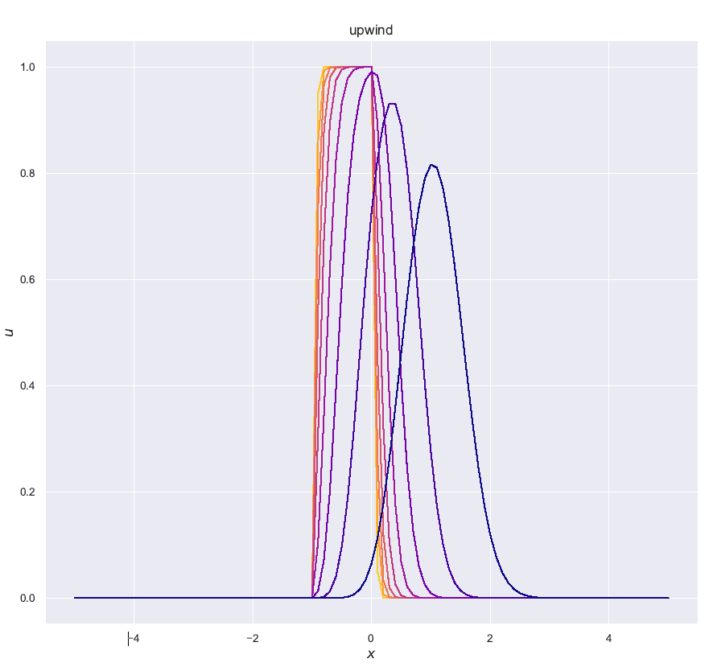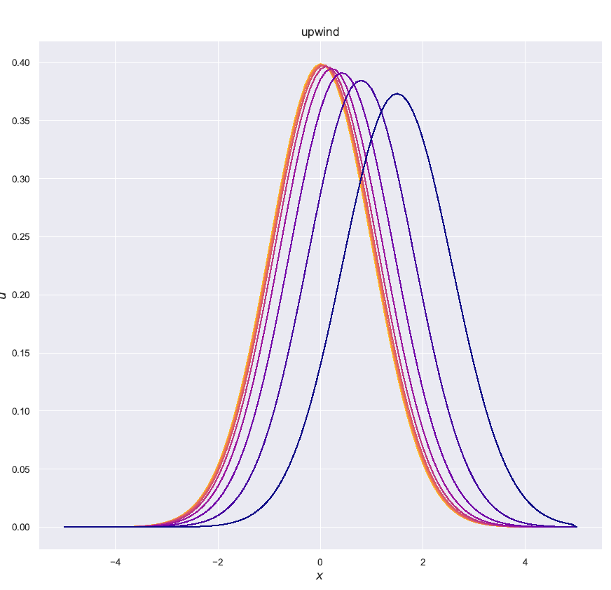
<p class="caption">
Figure 3.9: Even for smooth initial data, a first order upwind scheme exhibits severe artificial diffusion. Both plots show the one way wave equation <span class="math inline">\(u_t-u_x=0\)</span> with an indicator initial profile (a) and a Gaussian profile (b).
</p>
</div>
<div class="figure" style="text-align: center"><span id="fig:DDFTPDEsim"></span>
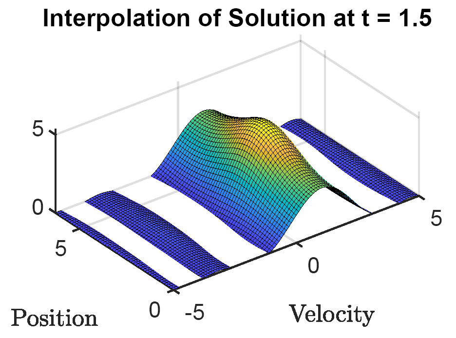
<p class="caption">
Figure 3.10: Simulating the kinetic model <a href="litreview.html#eq:nl">(2.5)</a> using <em>2DChebClass</em>. Here we use a smooth herding function, uniform interaction (<span class="math inline">\(\varphi=1\)</span>) and initial data <span class="math inline">\(f_0 = \exp(-(v-1)^2/2)(\exp(\sin(x))+2)\)</span>. The equation is solved on <span class="math inline">\(\mathbb{T}\times[-5,5]\)</span>, with 10 mesh points in both dimensions. The solution appears to contradict the non-negativity, however this is just an artefact of the interpolating method used for plotting—the solution calculated is always non-negative.
</p>
</div>

</div>
</div>
<h3>References</h3>
<div id="refs" class="references">
<div id="ref-Nagapetyan17">
<p>[10] <span class="smallcaps">Nagapetyan</span>, T., <span class="smallcaps">Duncan</span>, A. B., <span class="smallcaps">Hasenclever</span>, L., <span class="smallcaps">Vollmer</span>, S. J., <span class="smallcaps">Szpruch</span>, L. and <span class="smallcaps">Zygalakis</span>, K. (2017). The true cost of stochastic gradient langevin dynamics.</p>
</div>
<div id="ref-2Dchebclass">
<p>[11] <span class="smallcaps">Goddard</span>, B., <span class="smallcaps">Nold</span>, A. and <span class="smallcaps">Kalliadasis</span>, S. (2017). 2DChebClass.</p>
</div>
<div id="ref-Nold17">
<p>[12] <span class="smallcaps">Nold</span>, A., <span class="smallcaps">Goddard</span>, B. D., <span class="smallcaps">Yatsyshin</span>, P., <span class="smallcaps">Savva</span>, N. and <span class="smallcaps">Kalliadasis</span>, S. (2017). Pseudospectral methods for density functional theory in bounded and unbounded domains. <em>Journal of Computational Physics</em> <strong>334</strong> 639–64.</p>
</div>
</div>
<div class="footnotes">
<hr />
<ol start="1">
<li id="fn1"><p>See <a href="https://dash.plotly.com/" class="uri">https://dash.plotly.com/</a><a href="num-studies.html#fnref1" class="footnote-back">↩</a></p></li>
</ol>
</div>
            </section>

          </div>
        </div>
      </div>
<a href="litreview.html" class="navigation navigation-prev " aria-label="Previous page"><i class="fa fa-angle-left"></i></a>
<a href="future.html" class="navigation navigation-next " aria-label="Next page"><i class="fa fa-angle-right"></i></a>
    </div>
  </div>
<script src="libs/gitbook-2.6.7/js/app.min.js"></script>
<script src="libs/gitbook-2.6.7/js/lunr.js"></script>
<script src="libs/gitbook-2.6.7/js/clipboard.min.js"></script>
<script src="libs/gitbook-2.6.7/js/plugin-search.js"></script>
<script src="libs/gitbook-2.6.7/js/plugin-sharing.js"></script>
<script src="libs/gitbook-2.6.7/js/plugin-fontsettings.js"></script>
<script src="libs/gitbook-2.6.7/js/plugin-bookdown.js"></script>
<script src="libs/gitbook-2.6.7/js/jquery.highlight.js"></script>
<script src="libs/gitbook-2.6.7/js/plugin-clipboard.js"></script>
<script>
gitbook.require(["gitbook"], function(gitbook) {
gitbook.start({
"sharing": {
"github": false,
"facebook": true,
"twitter": true,
"linkedin": false,
"weibo": false,
"instapaper": false,
"vk": false,
"all": ["facebook", "twitter", "linkedin", "weibo", "instapaper"]
},
"fontsettings": {
"theme": "white",
"family": "sans",
"size": 2
},
"edit": {
"link": null,
"text": null
},
"history": {
"link": null,
"text": null
},
"view": {
"link": null,
"text": null
},
"download": null,
"toc": {
"collapse": "subsection"
}
});
});
</script>

<!-- dynamically load mathjax for compatibility with self-contained -->
<script>
  (function () {
    var script = document.createElement("script");
    script.type = "text/javascript";
    var src = "true";
    if (src === "" || src === "true") src = "https://mathjax.rstudio.com/latest/MathJax.js?config=TeX-MML-AM_CHTML";
    if (location.protocol !== "file:")
      if (/^https?:/.test(src))
        src = src.replace(/^https?:/, '');
    script.src = src;
    document.getElementsByTagName("head")[0].appendChild(script);
  })();
</script>
</body>

</html>
